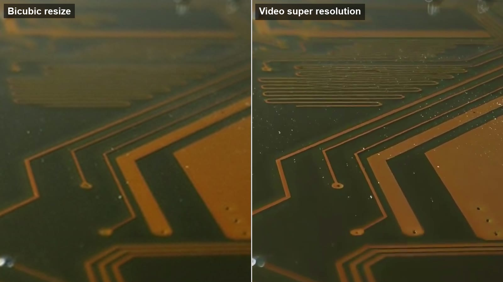

Video Super Resolution vs Resizing: What Actually Changes in the Frame

Every video player can show a 720p file on a 4K screen. It does that by resizing: each original pixel is spread across several screen pixels, with some smoothing so the result does not look like a mosaic. The frame gets bigger, but no information is added. Video super resolution, usually shortened to VSR, is a different operation: it tries to reconstruct the detail that a larger frame should contain. Understanding the difference tells you when upscaling is worth doing at all.
What resizing does
Resizing algorithms such as bilinear and bicubic interpolation compute each new pixel as a weighted average of the nearby original pixels. Bicubic uses a slightly wider neighbourhood and a curve instead of a straight line, which keeps edges a little crisper. Either way, the output is a mathematically smooth blend of what was already there. A thin power line that was one pixel wide at 720p becomes a soft, three-pixel-wide smear at 4K. Text that was unreadable stays unreadable, just bigger.
This is not a flaw. Resizing is fast, predictable and never invents anything, which is exactly what you want for playback. It is simply the wrong tool when the goal is a sharper picture.
What super resolution does
A super resolution model is trained on pairs of low-resolution and high-resolution footage. From millions of examples it learns what hair, brick, grass, skin and lettering look like at full resolution and how they degrade when downscaled and compressed. At inference time it takes the small frame and produces a larger one that is consistent with the input and with that learned prior.
The video-specific part is temporal. Image upscalers treat every frame alone, which causes two problems: detail that flickers because each frame was guessed slightly differently, and missed information, because a detail that is unclear in one frame is often clearer in the next. A VSR model aligns a window of neighbouring frames, borrows the sharper samples from them, and keeps the reconstruction stable from frame to frame. The video super resolution explainer on VideoUpscaler shows a bicubic-versus-VSR crop of the same circuit board frame, and the difference is exactly this: the resize is a smooth blur, the VSR output has readable traces and component edges.
Where VSR falls short
- It cannot recover what was never captured. Out-of-focus footage, heavy motion blur and deliberate censor blur have no underlying detail to reconstruct.
- It can hallucinate. On very low-quality input the model has to guess more, and the guesses may be plausible but wrong, especially on faces and text.
- It costs compute. Aligning frames and running a neural network for every output frame is thousands of times heavier than a bicubic resize, which is why it runs on GPUs and why cloud services charge per second of video.
- It needs a sensible target. Going 2× to 4× from the source resolution is the range where models are trained and tested; a 10× jump mostly produces smooth, invented texture.
How to decide
Ask where the video will be watched and what the source is. A 1080p clip going to a phone screen gains nothing from VSR; the display cannot show the extra detail. A 720p family clip going to a 4K TV gains a lot, because the TV would otherwise resize it and every edge would soften. Compressed footage with visible blocks gains even when the resolution stays the same, because the model cleans up the compression artifacts as part of the reconstruction.
When the answer is a bigger screen and a 2× to 4× step, run a short test first. On VideoUpscaler a 1080P output costs 1 credit per second and new accounts start with 10 free credits, so a few seconds is enough to compare against a plain resize on the same frame. If you are specifically targeting 3840×2160 output, the 4K video upscaler page covers which sources work best for that step.
Quick reference
| Question | Resize | Super resolution |
|---|---|---|
| Adds detail? | No | Yes, reconstructed |
| Uses neighbouring frames? | No | Yes |
| Can be wrong? | No | Occasionally |
| Cost | Negligible | GPU time, billed per second |
| Best for | Playback | Delivery to larger screens |